Klyn
Sobre el proyecto
Es una plataforma paraguaya para comprar, vender, depositar y enviar activos digitales en guaraníes o dólares. Tiene saldos, mesa de negociación con chat e historial de movimientos. El registro valida la identidad con documento y prueba de vida, y también revisa la seguridad de la billetera.
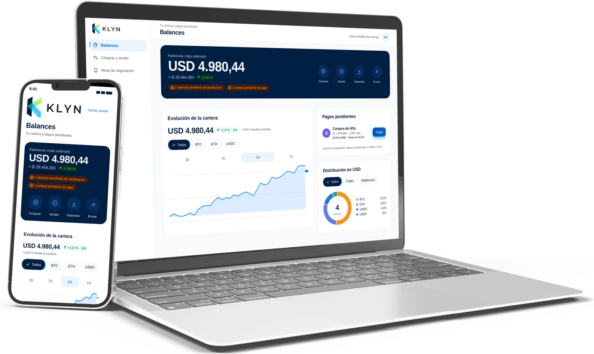
Pantallas mobile

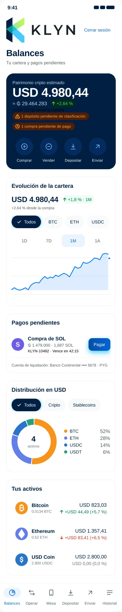
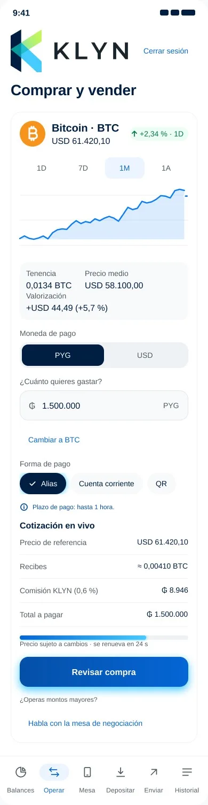
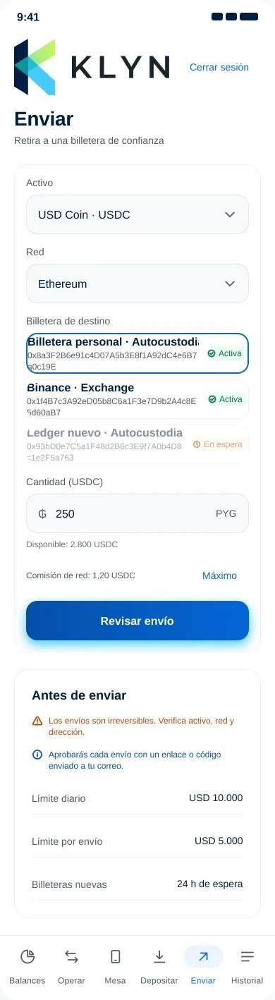
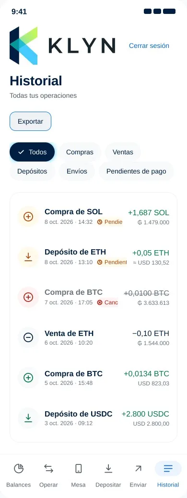
1 / 5
Pantallas tablet
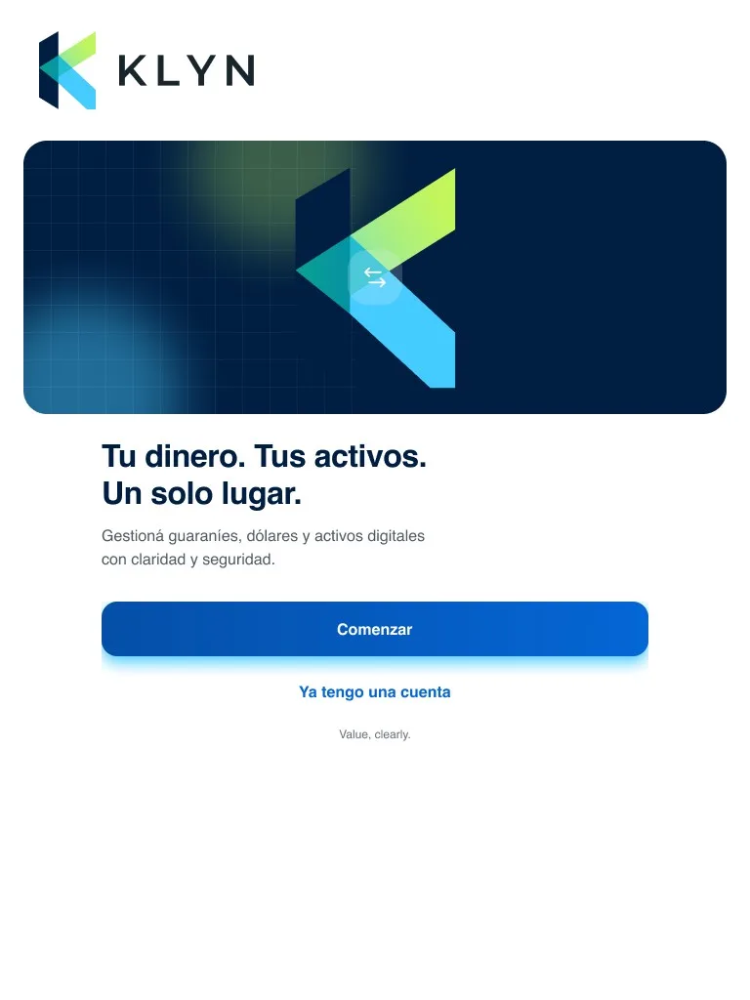
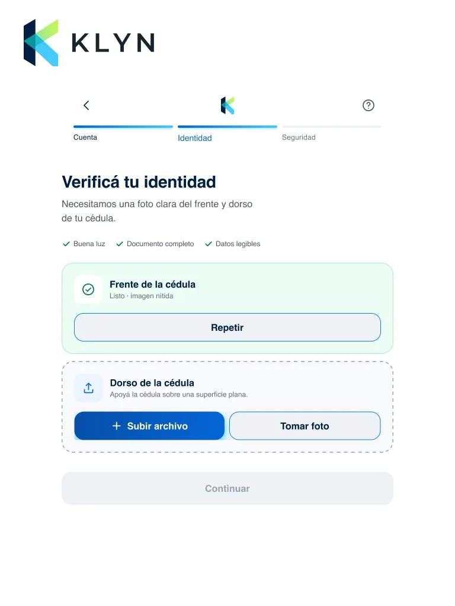
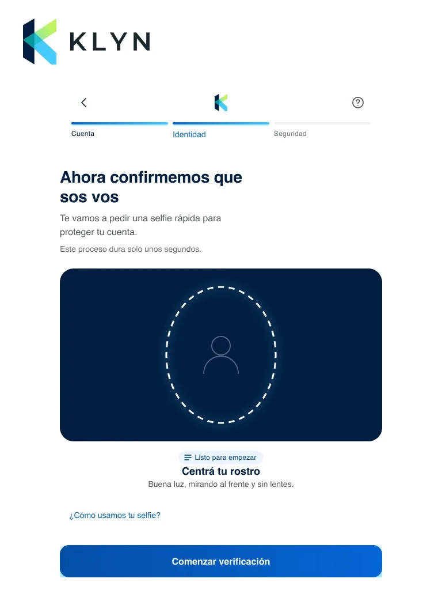
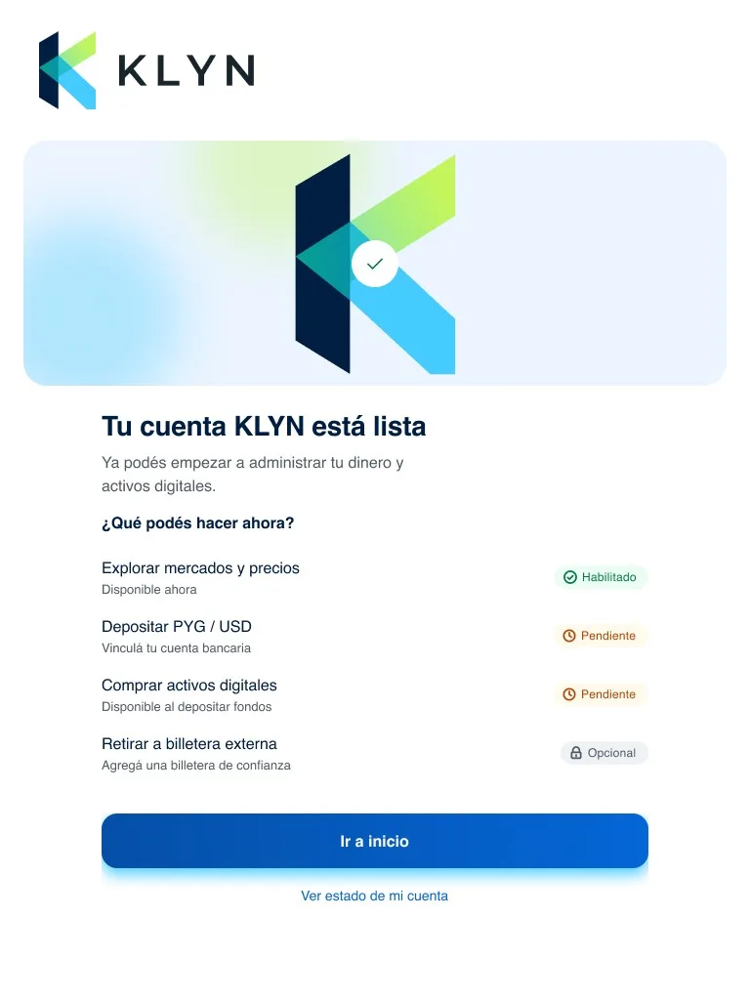
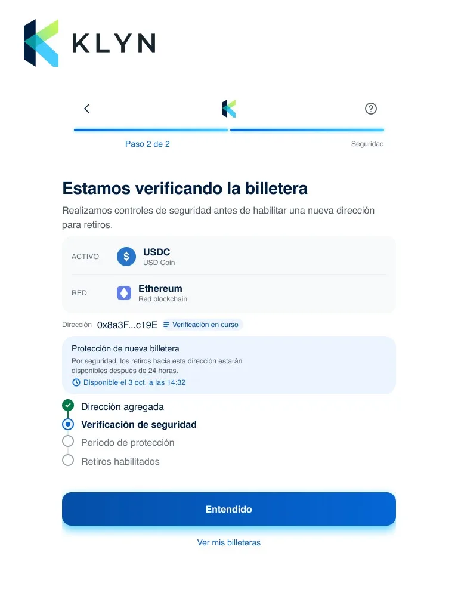
1 / 5
Pantallas web
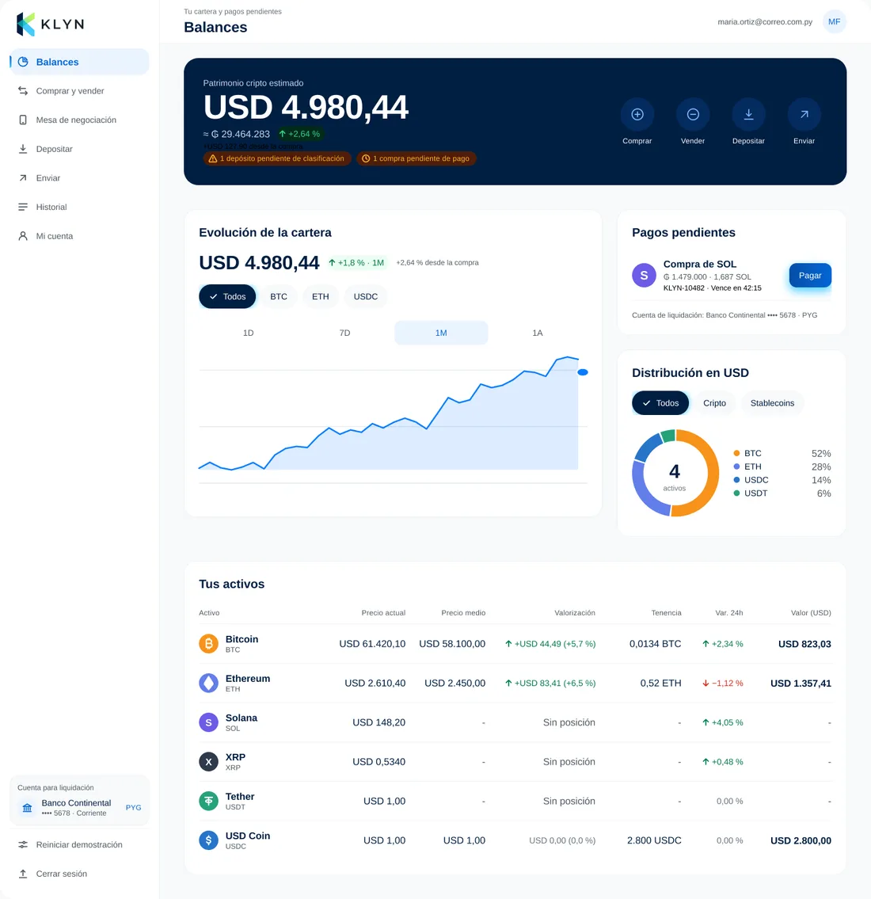
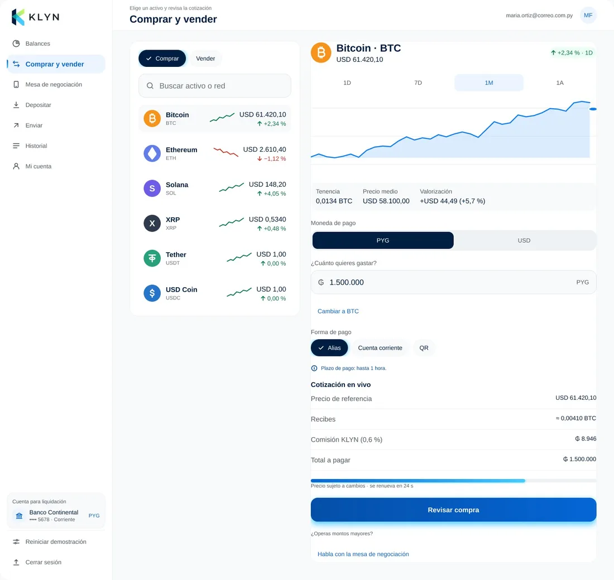
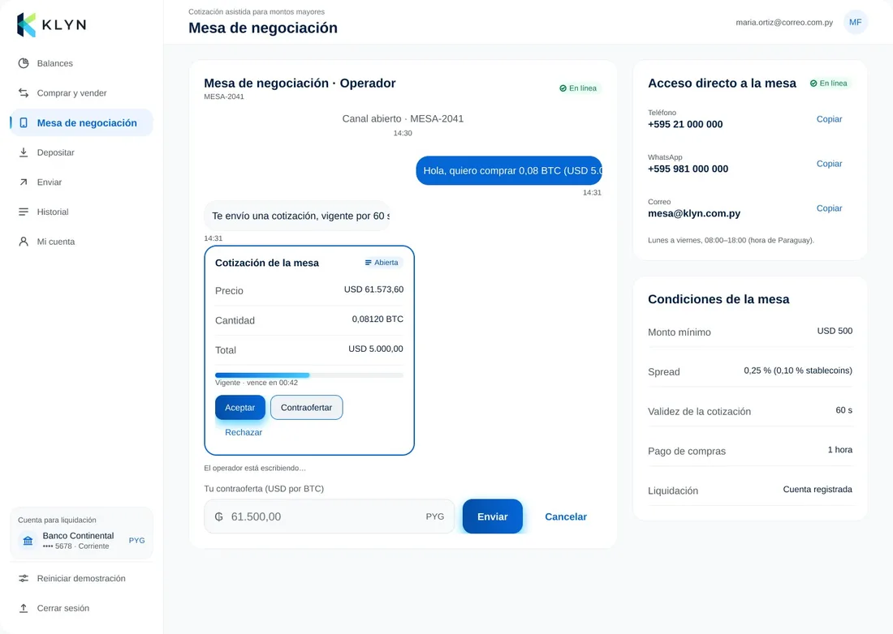
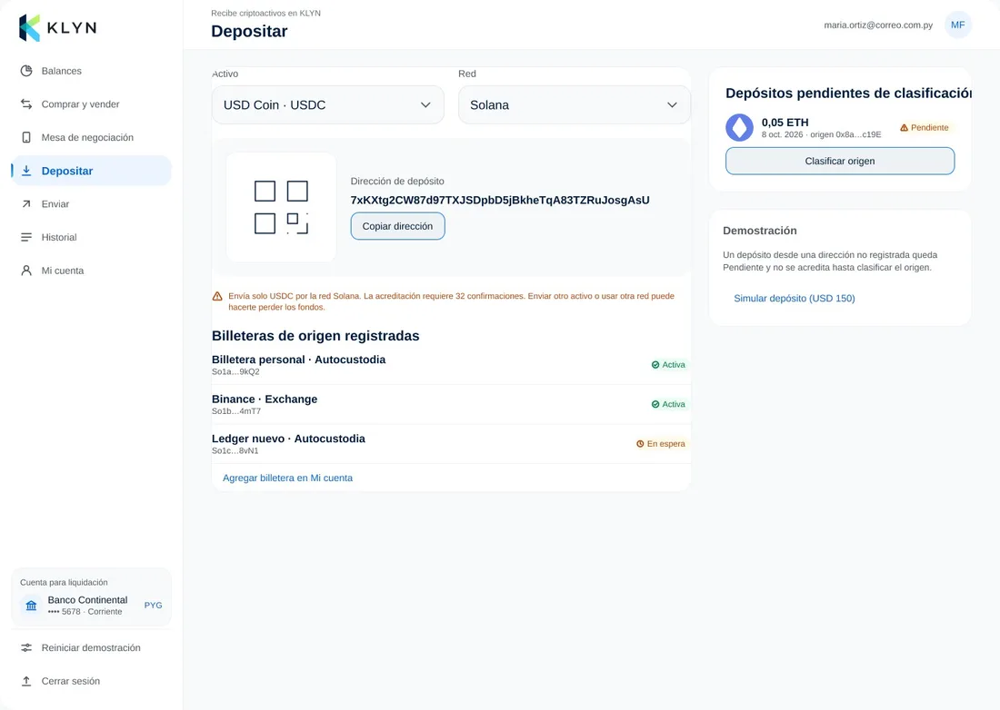
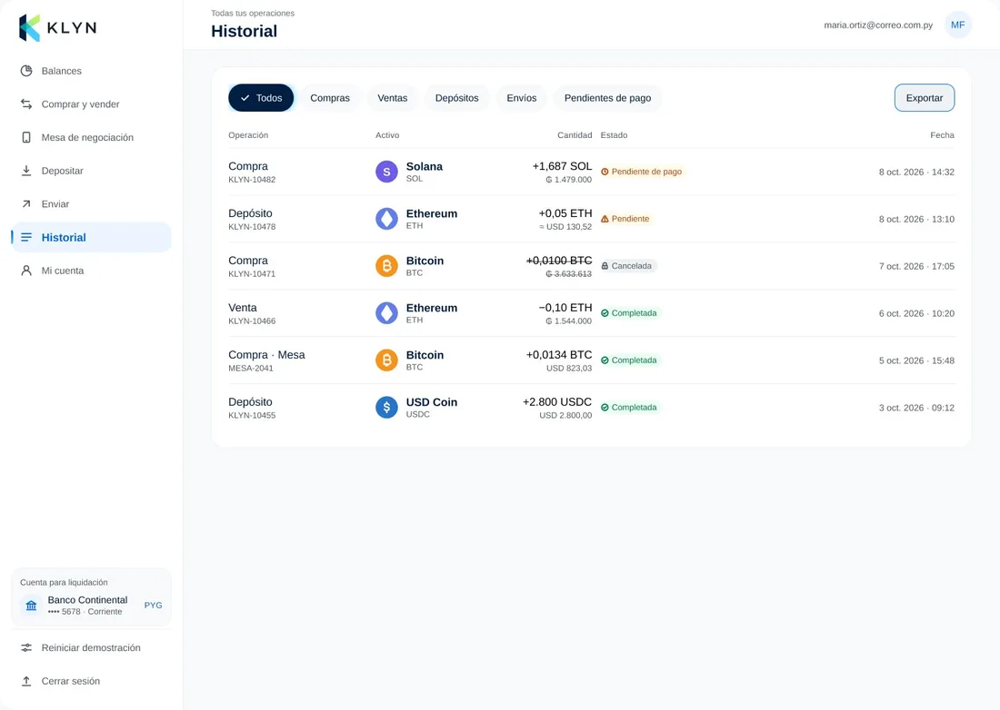
1 / 5
Mi colaboración
- Diseño del producto completo en mobile, web y tablet.
- Análisis del registro y la verificación de identidad: documento, prueba de vida y revisión de seguridad de la billetera.
- Diseño de las operaciones de compra y venta, la mesa de negociación, los depósitos, los envíos y el historial.
- Armado de un design system propio, con componentes financieros, cripto y de verificación de identidad desde el manual de marca del cliente.
- Adaptación del producto a la versión para Paraguay, con liquidación en guaraníes y dólares.
- Construcción del diseño con prompts en Claude y modificaciones manuales para un acabado más atractivo.